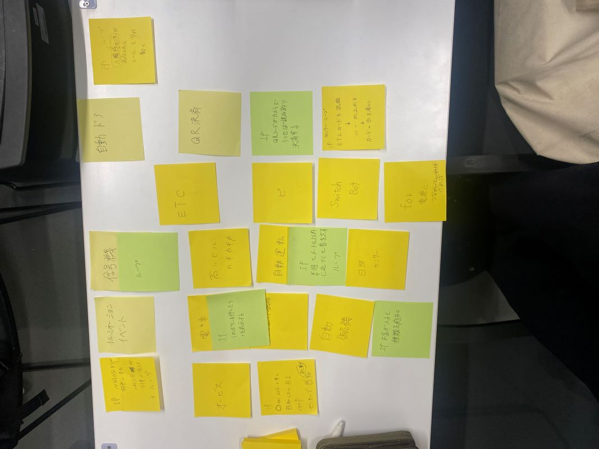
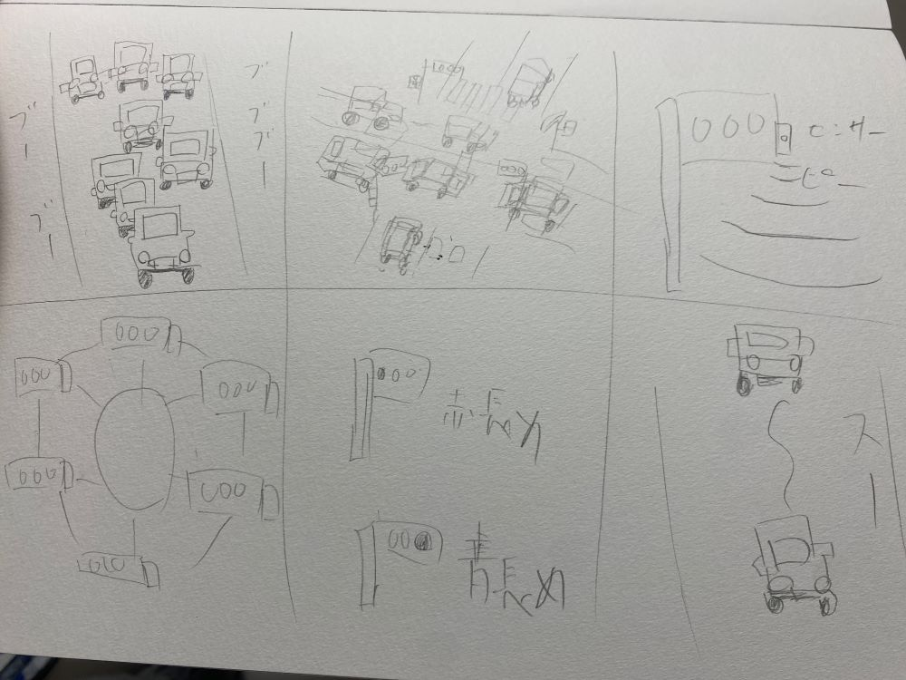

プログラムでモノを動かす
プログラムで動かしているもの

自動運転
時間指定のイルミネーション、信号機
学生証で出欠管理
などなど
最近の自動車のプログラムの仕組み
最近の自動車は車間センサーが導入されている。この仕組みはおそらく・・・
1、エンジンがかかるとシステムが起動しずっとループしている
2、センサーの発信
センサーが電波またはレーザーを前方に発信する。これは、前方の障害物に向けて送られるそう。
3、反射の受信
発信されたセンサーが前方の物体に当たり、一部が物体によって反射され、センサーはこの反射波を受信する。
4、時間差の測定
センサーは、発信から反射までの時間差を測定し、物体までの距離を示す。
5、距離の計算
時間差から距離を計算する。これにより、前方の物体までの距離がわかる。
６、速度の調整
距離情報を車両のコンピューターに送信し、必要に応じて速度を調整する。たとえば、前方の車両との距離が近い場合、ブレーキをかけて速度を低下させることがある。
このようなシステムがエンジンがついている間はループしつづけていると考える。
スケッチ

これができれば、渋滞の緩和につながると思う。規模がでかすぎて自分では作れない。